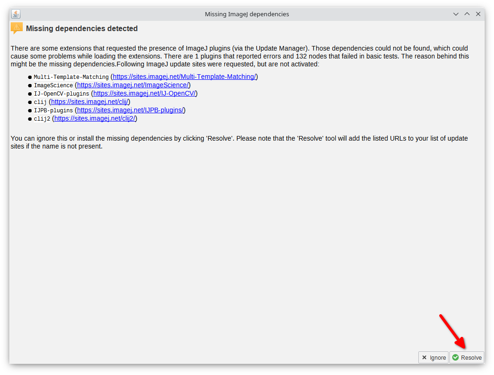
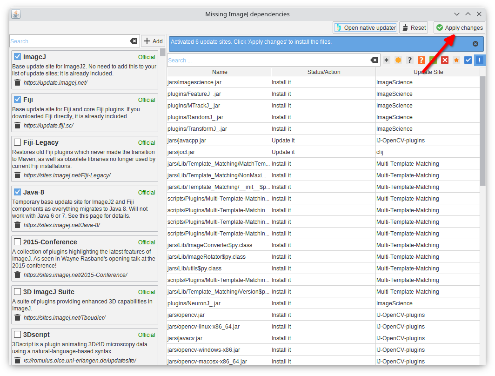
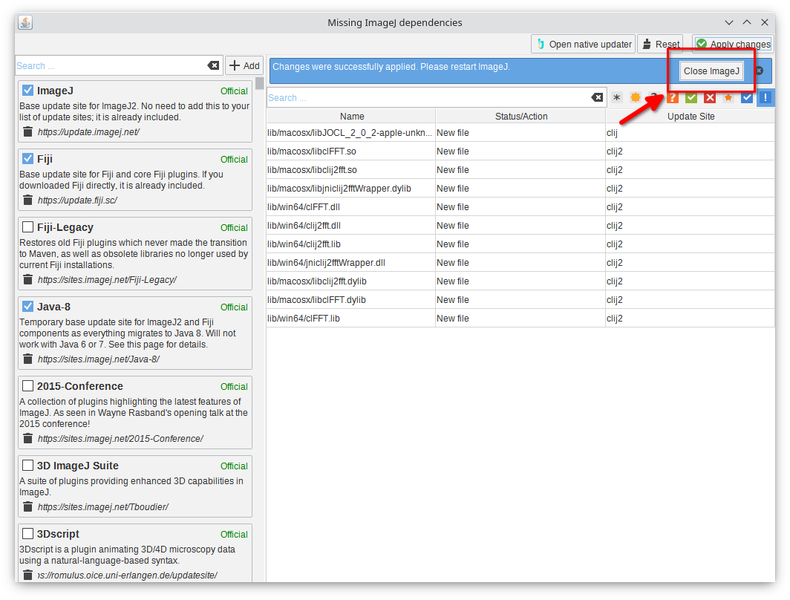
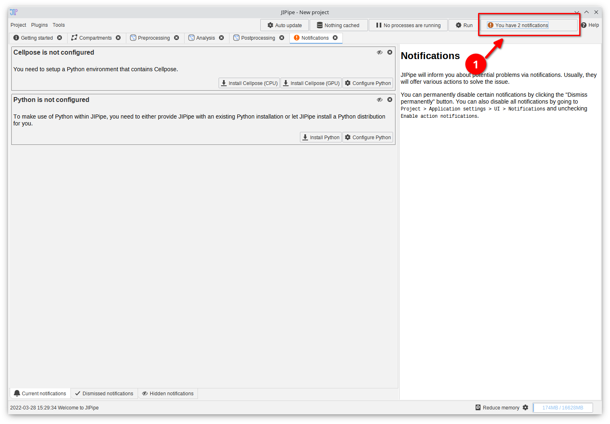

Installation
JIPipe can be installed in multiple ways:
- Install JIPipe via the ImageJ update manager (currently not available)
- Use our pre-packaged JIPipe distributions
- Use the online installer (currently not available)
- Install JIPipe manually
After a successful installation, JIPipe will warn you about third-party software (Python, R, …).
Installation with the update manager
This option is currently not available, as we are preparing the upload to the update manager.
Internet access is required during the installation.
- Start ImageJ/Fiji
- Go to Help > Update…
- Click Manage update sites
- Select
JIPipeand close the manage window - Click Apply changes
- Restart ImageJ
- You can find JIPipe here:
Plugins > JIPipe > JIPipe GUI(or use the search)
Pre-packaged JIPipe distributions
- Download a pre-packaged JIPipe distribution
- Extract the ZIP file
- Windows: Run ImageJ-win64.exe
- Linux: Run ImageJ-linux64
- MacOS: Run the JIPipe app
- You can find JIPipe here:
Plugins > JIPipe > JIPipe GUI(or use the search)
We currently have only limited capabilities of testing the MacOS version and appreciate any help of creating a smooth experience. Feel free to contact us!
Online installer
This option is currently not available, as we are preparing the upload to the ImageJ update system.
Internet access is required during the installation.
- Download the online installer
- Windows: Run the setup and follow the instructions
- Linux: Set the executable flag of the setup and run it. Follow the instructions.
- MacOS: Extract the ZIP file. Run the app. The setup will automatically download all software.
- You can start JIPipe directly from your Desktop/Menu
Manual installation
This requires an existing ImageJ installation. Please download the appropriate package from https://fiji.sc to get ImageJ.
We strongly recommend to update ImageJ (via Help > Update...) before installing JIPipe.
- Download the JAR files
- Windows/Linux: Navigate to the ImageJ directory. MacOS: Right-click the app and click
Show Package Contents. - Go into the
pluginsdirectory - Extract the downloaded JAR files
- Copy the JAR files into the ImageJ
pluginsdirectory. Do not copy thedependenciesdirectory. - Copy the contents of
dependenciesinto the ImageJjarsdirectory (you can click “Skip” if there are existing files) - Start ImageJ
- Run
Plugins > JIPipe > JIPipe GUI(or use the search) to open the JIPipe GUI
JIPipe might complain about missing plugins and show a list of missing dependencies. This is expected and caused by missing plugins.
- Click the
Resolvebutton and wait until the missing dependencies were detected - Click
Apply changes - Click
Close ImageJand restart ImageJ afterwards - Run JIPipe again. No error should be present, anymore.
  
Third-party software
JIPipe relies on additional third-party software to provide some functionality. This includes the integration of Python, R, and Cellpose. At the first start, these are not known to JIPipe, which in return will notify about these issues.
To open the notifications tab, click the blinking notification button at the top right.
You will be offered various options to resolve each notification:
- You can dismiss it temporarily (click )
- You can dismiss it permanently (click ). You can undo this by going to
Project > Application settings > UI > Notifications - You can apply a notification-related action (e.g., installation of a Python environment)
In the case of Python, R, and Cellpose, JIPipe directly offers installers that automatically handle the correct setup of these environments. In this case, you don’t need to configure anything else. If you want to enter settings manually or use alternative options (e.g., selecting an existing Python environment), click the configuration item.
